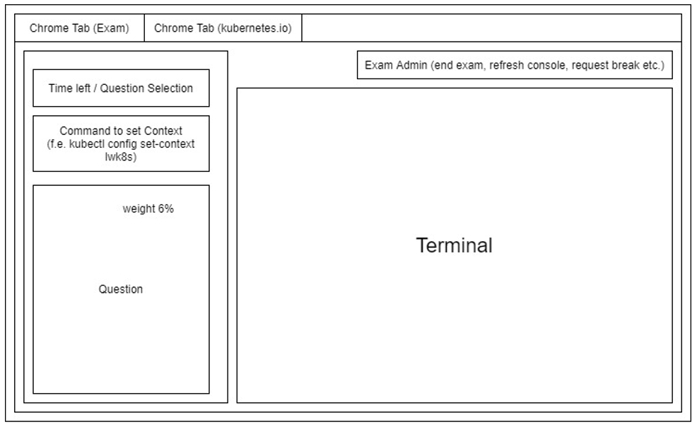

Intro
Pretendo compartilhar aqui algumas dicas que não estão na maioria dos posts que vi pela internet quando estava me preparando para a prova.
Esse post não é um guia de estudos para a certificação CKA, mas se você está procurando por um, recomendo esses:
- https://ravikirans.com/cka-kubernetes-exam-study-guide/
- https://dev.to/kodekloud/tips-and-tricks-to-pass-the-cka-and-ckad-exam-c76
- https://codeburst.io/the-ckad-browser-terminal-10fab2e8122e
- https://jimangel.io/post/cka-exam-for-experienced-kubernetes-operators/
Links oficiais sobre a cka:
Principais tópicos e seus respectivos pesos:
| Domain | Weight |
|---|---|
| Troubleshooting | 30% |
| Cluster Architecture, Installation & Configuration | 25% |
| Services & Networking | 20% |
| Workloads & Scheduling | 15% |
| Storage | 10% |
Não comece pelo kubernetes-the-hard-way
O tutorial do @kelseyhightower é excelente, porém acho que não é uma boa idéia investir um tempo considerável, executando um passo a passo que você não irá entender muita coisa do que fez, quando terminar.
Depois de um tempo de estudo, quando já estiver entendendo como funciona os principais componentes, aconselho sim que execute o tutorial pelo menos 2 vezes, tente não entrar em um modo automático, apenas copiando e colando os comandos.
https://github.com/kelseyhightower/kubernetes-the-hard-way
Documentação de versões passadas
Quando fiz a prova a documentação do Kubernetes estava mudando para a versão 1.20, fui consultar um comando de instalação que estava lá a dois dias atrás… não estava mais lá rsrs, revirei a documentação, perdi uns 2 min e só depois lembrei que tinha como mudar para a versão anterior.

Tenha uma máquina windows de reserva
Quando fiz o exame perdi cerca de 20 minutos antes do inicio da prova, tempo que levei tentando compartilhar a câmera do Macbook pelo Chrome e no final acabar trocando de notebook para um com Windows.
Como é a tela da prova?

Dominando o vim

O vim é um editor derivado do vi presente na maioria das distribuições linux e unix, bem complexo, mas muito eficiente, no exame você terá apenas uma aba com um terminal linux no caso um ubuntu.
Dominar o vim vai te ajudar muito a economizar tempo na hora do seu exame, acredite 2 horas não dá pra nada, já que as perguntas são totalmente práticas e um detalhe esquecido pode fazer muita diferença no resultado da questão.
| Comandos | Descrição |
|---|---|
| i | Habilita a inserção de texto onde está o cursor |
| esc : q ! | Sai do vim confirmando que não quer salvar (Mais usado) |
| esc : w q ! | Salva e sai do vim |
| esc d 99 d | Apaga 99 linhas à partir do cursor |
| esc dd | Apaga a linha inteira onde o cursor está |
| esc : % s/x/y/g | Faz o replace de x por y em todas as vezes que x aparece no arquivo |
| esc gg | Move o cursor para a primeira linha do arquivo |
| esc : set number | Habilita a numeração das linhas do arquivo |
| esc G | Move para o final do arquivo |
| esc /texto_exemplo | Procura pela palavra texto_exemplo no arquivo |
| esc /texto_exemplo + n | Pula para a próxima ocorrência |
| esc /texto_exemplo + N | Pula para a ocorrência anterior |
Com esses comandos você consegue copiar, colar e apagar blocos de código:
| Comandos | Descrição |
|---|---|
| esc + V + (seta cima / baixo) | Seleciona as linhas que serão copiadas |
| y | copia as linhas selecionadas |
| d | Apaga as linhas selecionadas |
| p ou P | Cola as linhas selecionadas |
Como splitar a tela com o TMUX

O tmux não vem instalado por padrão no servidor que é usado no exame, para instalar é bem simples basta rodar isso:
sudo apt -y install tmux
# caso não funcione, tente rodar os seguintes comandos e depois rodar o install novamente:
# sudo apt update
# sudo apt upgrade
Principais comandos tmux que podem ser usados no exame:
# O prefix deverá ser usado antes de todos os comandos ao tmux.
{prefix} = ctrl + b
ctrl + b + " Divide a janela na horizontal
ctrl + b + % Divide a janela na horizontal
ctrl + b + {Arrow-Key} Muda de janela
ctrl + b + c Cria uma nova janela
ctrl + b + p Pula para a janela anterior
ctrl + b + n Pula para a proxima janela
ctrl + b + {Page-up-Key} Desliza a pagina na janela atual
ctrl + b + {Arrow-Key} Aumenta ou diminui o tamanho da janela atual
ctrl + d Sai da janela atual
Deletar objetos pode te custar alguns segundos
Aqui vai uma dica quase niguém fala e que me ajudou bastante, deletar objetos no kubernetes pode demorar alguns segundos principalmente quando tem alguma secret, configmap ou volume atrelada à ela, no caso de deployment ou pod.
kubectl -f delete objeto.yaml ; ctrl+z + bg
O comando ctrl+z + bg coloca o comando anterior em backgroud e te libera a linha de comando para ir editando o yml e isso economiza aqueles segundos que fazem a diferença.
Se quiser voltar o comando para foreground, só digitar:
fg
Kubectl aliases e autocompletion
Sem dúvida os aliases mais importantes são o k="kubectl" e o $dry, não usei muitos aliases como nesse projeto, porque sinceramente não achei que valesse muito a pena, afinal iria acabar perdendo mais tempo tentando lembrar dos comandos do que realmente fazendo o que precisava.
export dry="--dry-run=client -o yaml"
# Cria um yaml com o manifest de um pod nginx
kubectl run nginx --image nginx $dry > nginx_pod.yaml
# Mesmo que o anterior, porém aqui cria um deployment ao invés de um pod
kubectl create deploy nginx --image nginx $dry > deploy.yaml
E para habilitar o autocomplete do kubectl, aqui está o link da documentação oficial
echo 'source <(kubectl completion bash)' >>~/.bashrc
echo 'alias k=kubectl' >>~/.bashrc
echo 'complete -F __start_kubectl k' >>~/.bashrc
Anote as respostas
Logo que iniciar o exame, rode esse comando à seguir no terminal:
for i in $(seq 1 24);do echo "$i - " ;done
Isso irá gerar 24 linhas no seguinte formato:
1 -
2 -
3 -
4 -
...
24 -
Depois copie e cole no notepad da plataforma, assim você conseguirá marcar as questões feitas e o peso.
No final o meu notepad do exame ficou algo parecido com isso:
Questões, Peso, OK/NOK
1 - 4 - OK
2 - 3 - OK
3 - 7 - NOK
4 - 4 - OK
...
24 - 8 - NOK
É isso…
Tentei focar aqui em dicas que não são comuns nesses tipos de posts, se te ajudou compartilha com a comunidade e se tem alguma sugestão só mandar um PR aqui: https://github.com/fmaced1/fmaced1.github.io